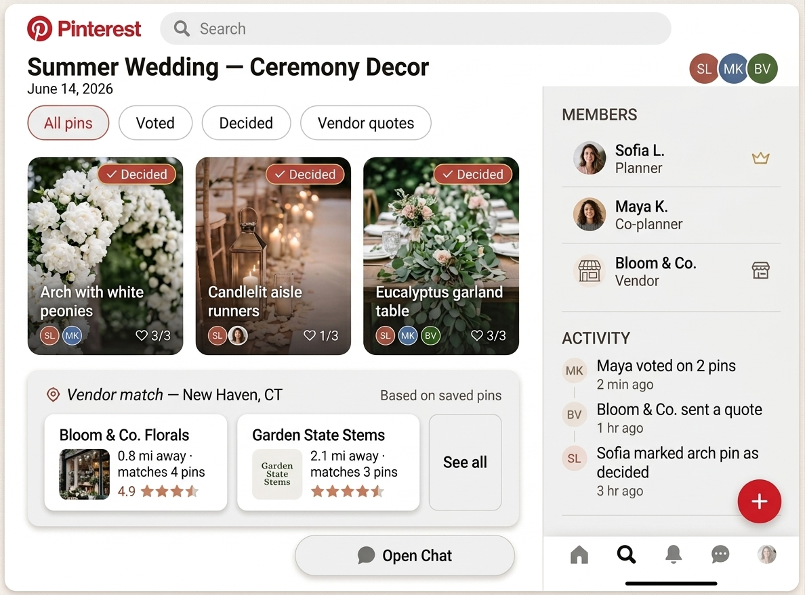
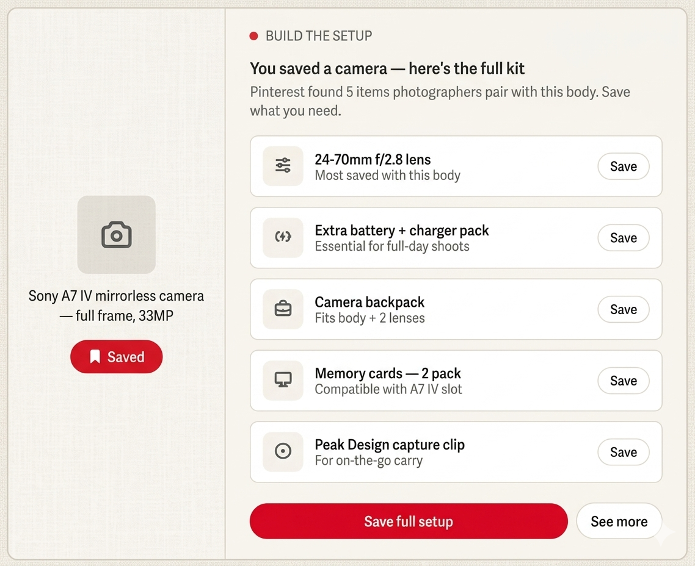
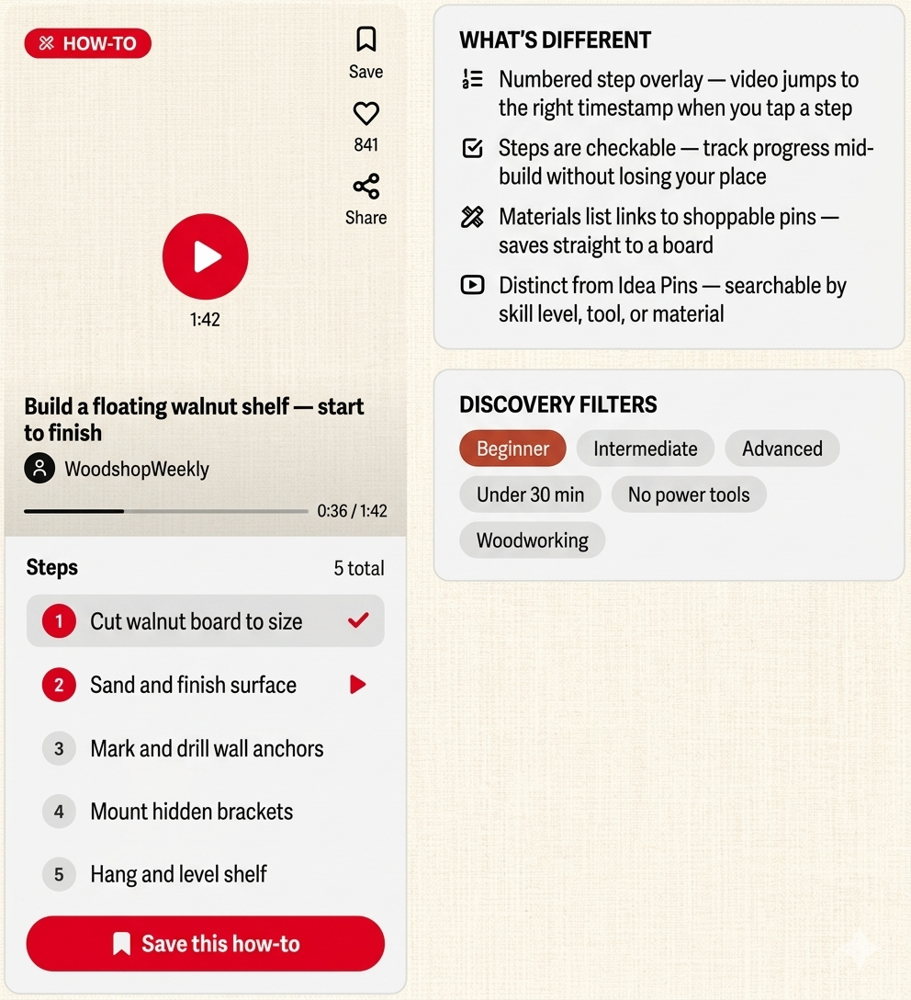

Why Expand the User Base?
Pinterest's mission is "to bring everyone the inspiration to create a life they love." Their business model reflects that. Users create boards to collect pins organized around whatever they're planning or dreaming about, and those pins drive revenue through affiliate shopping integrations and native ads.
A larger user base (measured by the number of monthly active users) means more ad impressions, more affiliate purchases, and more data to improve recommendations, all of which would lead to more revenue.
Who Are We Building For?
~77% of Pinterest's users are women. That makes men the single largest untapped segment on the platform. To think about how to reach them, it helps to segment users by intent:
Explores pins around a craft or interest: gardening, painting, woodworking.
Organizes a specific life event: wedding, baby shower, birthday party.
Uses Pinterest as a discovery and wishlist tool toward a transaction.
In my opinion, the right design approach would be to think about features that could expand the male user base in each of these three intent groups. With only ~23% of users being male, men represent the single largest untapped segment on the platform. The features below are designed specifically to give them a reason to join and stay.
Features Landscape
Mapping opportunities across gender and intent reveals where the growth is. The female column reflects deepening engagement with Pinterest's existing core. The male column is where the upside lies.
| Female Users | Male Users | |
|---|---|---|
| Hobbyist |
|
|
| Event Planner |
|
|
| Purchaser |
|
|
- Skill Progression Boards: Allow a user to track a hobby over time by organizing pins into boards that show their progression from beginner to advanced.
- Tutorial Sequencing: Allow a user to chain pins into a step-by-step project path and follow a sequence rather than browse freely.
- Hobby Communities / Circles: Small, niche group boards with async discussion, kind of like Pinterest-native subreddits for baking, gardening, or ceramics.
- Gear & Tools Integration: A "what do I need for this?" panel attached to hobby pins that surfaces the tools, materials, and gear required to actually do the thing.
- Video-First Pin Format: A dedicated short-form how-to video format with timestamped steps, distinct from Idea Pins and optimized for instructional content.
- Collaborative Planning Rooms with Roles: Multi-user boards with defined roles (planner, co-planner, vendor), voting on pins, and a shared activity feed.
- Vendor Discovery: A location layer on event and decor pins that surfaces local vendors matching the saved aesthetic, with ratings and quotes.
- Guest Experience Builder: A shareable Pinterest board curated by the host that gives guests a visual preview of the event's vibe before they arrive.
- Collaborative Planning Rooms: Inviting a partner, parent, or vendor into a planning room requires them to join Pinterest, growing the user base as a natural byproduct.
- "My Wardrobe" / "My Home" Boards: A structured board tied to your actual wardrobe or home so new purchase recommendations complement what you already own instead of duplicating it.
- Style Quizzes: A Pinterest-native onboarding quiz that generates a personalized shopping feed based on your style preferences.
- Build the Setup Bundles: When a user saves a product pin, Pinterest automatically suggests the full ecosystem of items that pair with it.
Three Features Worth Building
Pinterest boards already support multiple contributors. This adds roles, voting, and an activity feed on top of infrastructure that's largely already there. The real growth mechanic: a single female planner inviting a partner, parent, or vendor to the room directly grows the male user base as a side effect of the feature working as intended.
The hardest part is the vendor integration layer, but that's a business development problem, not an engineering one.

When a user saves a product pin, say, a camera body, Pinterest automatically surfaces a panel suggesting the full kit: lenses, a bag, memory cards, accessories. Men tend to shop by ecosystem. This feature speaks directly to that behavior, giving men a reason to use Pinterest the way they already use Reddit threads and YouTube comment sections.
Saves a product → surfaces the full kit. A natural upsell that feels helpful, not pushy.

Men skew heavily toward instructional, execution-focused content. The YouTube DIY audience is enormous and predominantly male. A video-first how-to format with timestamped steps and a checkable progress overlay would give male users a reason to open Pinterest mid-project, not just for pre-project inspiration. This encourages user growth in the male populating as well as increased engagement time with the app.
The shift from a platform you browse before doing something to one you use while doing it is what would turn a casual male visitor into a regular user.

The Big Picture
In my opinion, Pinterest’s growth problem isn’t a content problem. It’s a relevance problem. The platform has spent a decade perfecting the experience for its core user, and in doing so, left an enormous segment of the population without a compelling reason to show up.
Collaborative planning rooms deepen engagement for existing users and pull in male users through the natural social mechanics of planning with others. Build the Setup unlocks a shopping behavior men already have, just not on Pinterest. And a video-first pin format makes a credible case for Pinterest in the space of instructional how-to content.
Together these features retain more current users, pull in the adjacent user who's almost there, and make a long-term bet on the segment that could redefine what Pinterest is for.